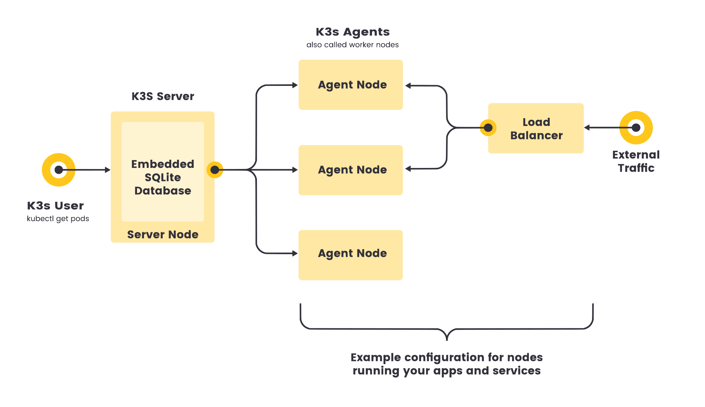

架构
本文介绍了高可用（HA）K3s 服务器集群的架构，以及 K3s 与单节点服务器集群的区别。
本文还描述了 Agent 节点是如何注册到 K3s Server 的。
-
Server 节点指的是运行
k3s server命令的主机，control plane 和数据存储组件由 K3s 管理。 -
Agent 节点指的是运行
k3s agent命令的主机，不具有任何数据存储或 control plane 组件。 -
Server 和 Agent 都运行 kubelet、容器运行时和 CNI。有关运行无 Agent 的 Server 的更多信息，请参阅高级选项。

带有嵌入式数据库的单服务器设置
下图显示了具有嵌入式 SQLite 数据库的单节点 K3s Server 集群示例。
在此配置中，每个 Agent 节点都注册到同一个 Server 节点。K3s 用户可以通过调用 Server 节点上的 K3s API 来操作 Kubernetes 资源。

高可用 K3s
单服务器集群可以满足各种用例，但如果你的环境对 Kubernetes control plane 的正常运行时间有要求，你可以在 HA 配置中运行 K3s。一个高可用 K3s 集群包括：
-
嵌入式数据库
-
外部数据库
-
三个或多个 Server 节点为 Kubernetes API 提供服务并运行其他 control plane 服务
-
嵌入式 etcd 数据存储（与单节点设置中使用的嵌入式 SQLite 数据存储相反）

-
两个或多个 Server 节点为 Kubernetes API 提供服务并运行其他 control plane 服务
-
外部数据存储（例如 MySQL、PostgreSQL 或 etcd）

Agent 节点的固定注册地址
在 HA 服务器配置中，每个节点都能使用固定的注册地址向 Kubernetes API 注册，如下图所示。
注册后，Agent 节点直接与其中一个 Server 节点建立连接。

Agent 节点注册的工作原理
Agent 节点通过 k3s agent 进程发起的 WebSocket 连接进行注册，连接由作为 agent 进程一部分运行的客户端负载均衡器维护。最初，Agent 通过本地负载均衡器端口 6443 连接到 supervisor（和 kube-apiserver）。负载均衡器维护了一个要连接的可用端点列表。默认（也是最初唯一的）端点来源于 --server 地址中的主机名。连接到集群后，Agent 会从默认命名空间中的 Kubernetes Service 端点列表中检索 kube-apiserver 地址列表。这些端点添加到负载均衡器，然后负载均衡器将保持与集群中所有 Server 稳定连接，提供与 kube-apiserver 的连接，从而容忍单个 Server 的中断。
Agent 将使用节点集群 Secret 以及随机生成的节点密码注册到 Server，密码存储在 /etc/rancher/node/password 中。Server 会将各个节点的密码存储为 Kubernetes Secret，后续的任何尝试都必须使用相同的密码。节点密码 Secret 存储在 kube-system 命名空间中，名称使用 <host>.node-password.k3s 模板。这样做是为了保护节点 ID 的完整性。
如果 Agent 的 /etc/rancher/node 目录被删除，或者你希望使用现有名称重新加入节点，那么你需要从集群中删除该节点。这将清除旧节点条目和节点密码 Secret，并允许节点（重新）加入集群。
如果你经常重复使用主机名，但无法删除节点密码 Secret，你可以使用 --with-node-id 标志启动 K3s Server 或 Agent，从而将唯一的节点 ID 自动附加到主机名。启用后，节点 ID 也存储在 /etc/rancher/node/ 中。